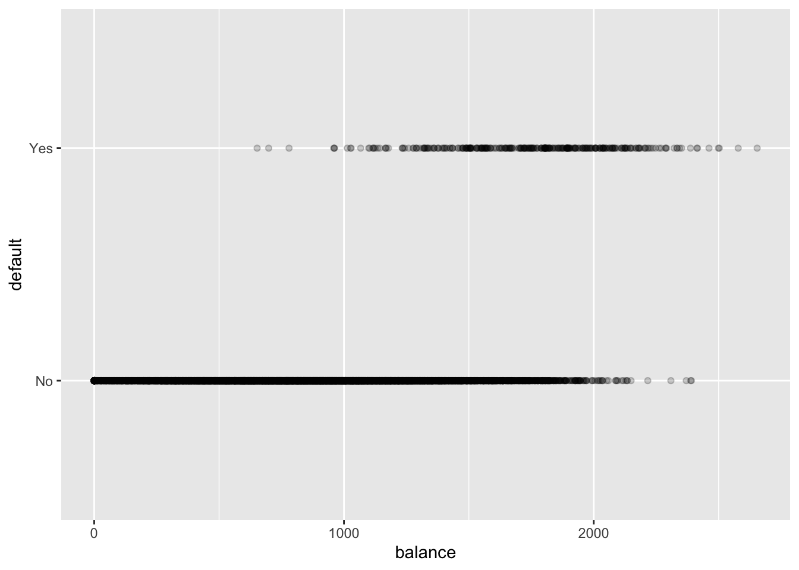
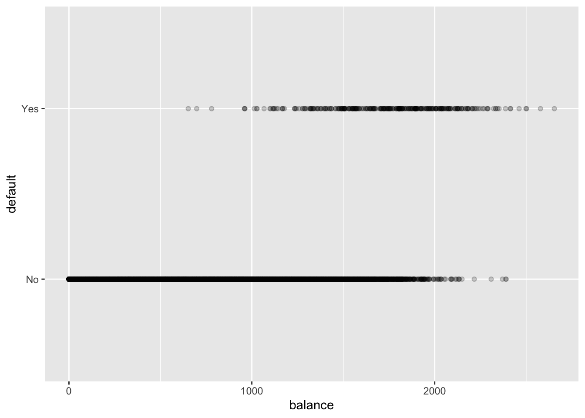
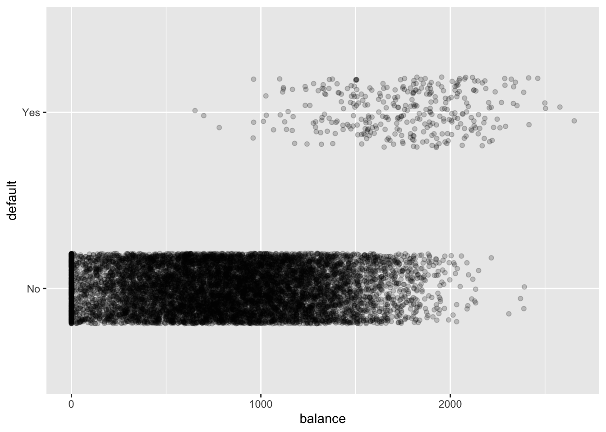
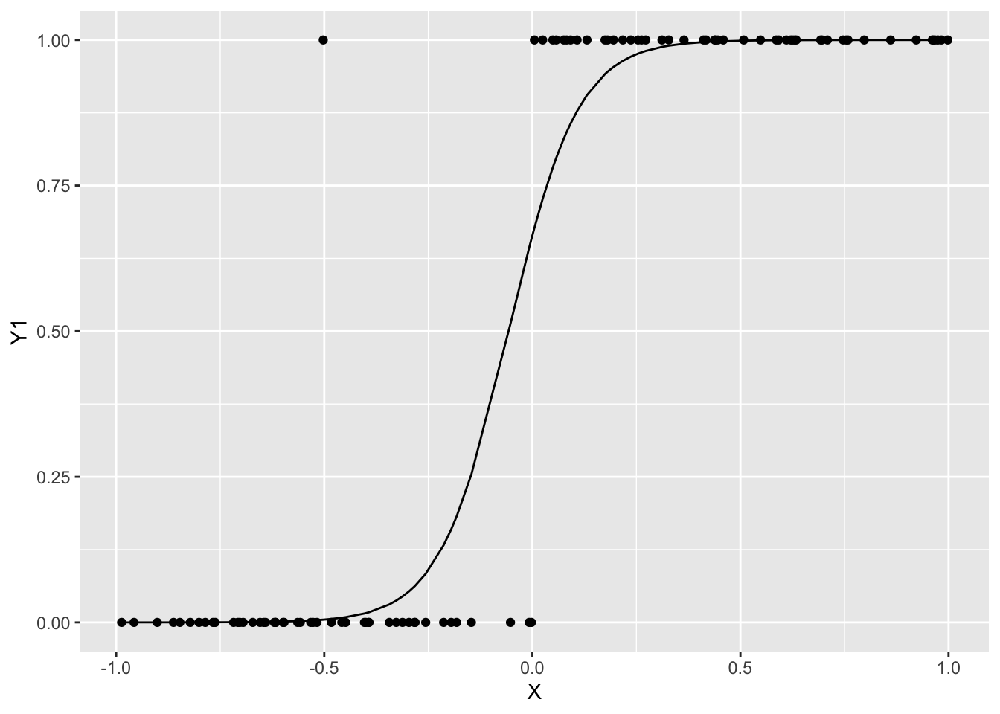
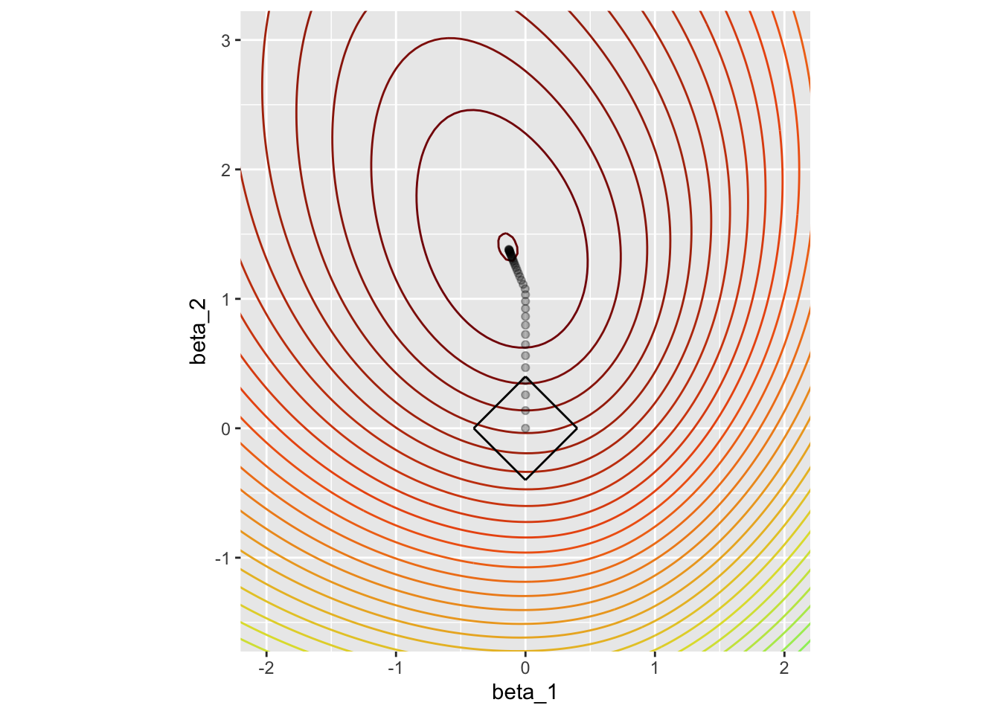

Code
# Default data set (simulated) from ESLII/ISLR
default_data <- ISLR2::Default %>%
as_tibble()
ggplot(default_data, aes(x=balance, y=default)) +
geom_point(alpha=0.2)
We provide here some intuitions leading to the Logistic Regression model using a simulated data set from James et al. (2021) (the Default data set).
This is a toy data set used for teaching purposes containing information on ten thousand customers.
The aim here is to assess which customers will default on their credit card debt (the target or response variable) based on the current credit card balance and other individual characteristics (the predictors or feature vector).
This is a binary classification problem as the default variable takes value in a discrete set (here binary). In the following we will denote \(Y\) the output or response variable and \(X = (X_0,X_1,\cdots,X_{p-1})^{T}\) the feature vector or inputs.
The approach we follow is similar to (Hosmer, Lemeshow, and Sturdivant 2013) or (Cornillon and Matzner-Løber 2019). Both books use a similar example: the presence or absence of a Coronary Heart Disease (CHD) is explained with the age of an individual (the data set chdage is available in companion package aplore3).
We can start to explore the Default data with a scatterplot (Figure 1) of the target variable (default) with respect to a predictor (balance):
# Default data set (simulated) from ESLII/ISLR
default_data <- ISLR2::Default %>%
as_tibble()
ggplot(default_data, aes(x=balance, y=default)) +
geom_point(alpha=0.2)
In this scatterplot, all points fall on one of two parallel lines representing the absence (No) or occurrence (Yes) of default. We “jitter” the data vertically to avoid overplotting. The plot below shows that the response variable is imbalanced towards the absence of default:
ggplot(default_data, aes(x=balance, y=default)) +
geom_jitter(alpha=0.2, height=0.2)
We also show the boxplots of credit cards balance with respect to default status:
ggplot(default_data,
aes(x=default, y=balance)) +
geom_boxplot()
We can see from Figure 1 and Figure 2 that default tends to be more prevalent for accounts with a high balance. However it is difficult to guess a simple relationship between default and balance.
To investigate further we discretise the balance variables by classes of width \(300\$\) and compute the mean of response variable (default is Yes) within each balance class:
class_width <- 300
(default_data_binned <- default_data %>%
mutate(balance_bins = cut(balance, breaks = seq(0, 3000, class_width),
right = FALSE, dig.lab = 4),
min = floor(balance / class_width) * class_width,
max = if_else(balance == 0 , 1,
# customers with 0$ balance should be long to [0, width) class
# or be excluded
ceiling(balance / class_width)) * class_width) %>%
group_by(balance_bins, min, max, default) %>%
summarize(n=n()) %>%
ungroup() %>%
pivot_wider(names_from = default, values_from = n) %>%
replace_na(list(Yes = 0, No = 0)) %>%
mutate(`Mean(default)` = round(Yes / (Yes + No), 4)))In the following we map, by convention and for better readability, the response variable \(Y \in\{Yes, No\}\) to \(\{0, 1\}\):
\[ Y = \left\{ \begin{array}{ll} 1& \mbox{if customer defaulted on its credit card (ie default=Yes)}\cr 0& \mbox{otherwise}. \end{array} \right. \]
Then we plot the mean of default (in red) within each balance class (of width \(300\$\)):
(default_occurrence <-
ggplot(default_data %>% mutate(default = if_else(default == "Yes", 1, 0)), aes(x=balance, y=default)) +
geom_point(alpha=0.2) +
geom_segment(data = default_data_binned,
aes(x = min, xend = max, y = `Mean(default)`, yend = `Mean(default)`),
color = 'coral',
linewidth=1.25))
The relationship between the mean occurrence of default and balance is easier to read.
Figure 3 clearly shows that as balance increases, the proportion of customers defaulting on their credit card increases.
We also notice that the mean default occurrence with respect to balance classes follows a kind of “S”-shaped curve or sigmoid function. Note that the shape depends on classes width and might change.
Going further and informally, considering that the mean of default occurrence is an estimate of \(\mathbf{E}[Y|X=x]\) for each balance classes an idea would be to model:
\[ \mathbb{E}[Y|X=x] = \mu_\beta(x) \]
where \(\mu_\beta\) is a sigmoid function in \([0,1]\).
The Logistic Regression model uses the sigmoid function \(\sigma: x \to\sigma(x)=\frac{e^{x}} { 1 + e^{x} }\) also known as logistic function.
(default_occurrence +
geom_smooth(method = "glm",
formula = y ~ x,
method.args = list(family = "binomial"),
se = FALSE,
col = "dodgerblue",
linetype = "dotted") +
geom_segment(data = default_data_binned,
aes(x = min, xend = max, y = `Mean(default)`, yend = `Mean(default)`),
color = 'coral',
linewidth=1.25))
Another approach would have been to treat \(Y\) as a quantitative response variable and fit a simple linear model:
linear <- lm(default ~ balance, data = default_data %>% mutate(default = if_else(default == "Yes", 1, 0)))
#summary(linear)
coeff_lm <- linear$coefficients
alpha <- coeff_lm["(Intercept)"]
beta <- coeff_lm["balance"](ggplot(default_data %>% mutate(default = if_else(default == "Yes", 1, 0)), aes(x=balance, y=default)) +
geom_point(alpha=0.2) +
geom_segment(data = default_data_binned,
aes(x = min, xend = max, y = `Mean(default)`, yend = `Mean(default)`),
color = 'coral',
size=1.25)+
geom_line(data = tibble(x = seq(0,3000, 300)) %>%
mutate(y = alpha + beta * x),
aes(x = x, y = y),
color = 'darkolivegreen',
linetype = 'dotted'))
# Alternatively we could have used the geom_smooth command
# geom_smooth(method = "lm",
# formula = y ~ x,
# se = FALSE,
# col = "darkolivegreen",
# linetype = "dotted")
Figure 4 shows that a linear model fails to fit the data. In particular, for low credit card balances the linear model shows a “negative probability of default”. This is quite prominent here as response variable is imbalanced towards the No default category. For the same reasons, the least square method fails to correctly fit the category of interest (less than 0.25 probability).
Usually in such presentation (for example Hosmer, Lemeshow, and Sturdivant (2013)) data is more balanced and a linear model approximately fits the two classes. However in any case a linear model cannot confine the predicted value to \([0, 1]\) for all observations of predictors.
We use the concepts we have defined in the first part of this lesson. The problem we are facing trying to predict the output default (\(Y \in(0,1)\)) using a training set of inputs or featur vector \(X\) is a binary classification problem.
We remind that to estimate an optimal classifier for output \(Y \in \{0,1\}\) using input \(X = (X_1,\cdots,X_p)\) one approach was to:
model the joint distribution (or generative distribution) between \(X\) and \(Y\),
estimate \(\eta(x)\) with:
\[ \eta(x)=\mathbb{P}[Y=1|X=x)] = \mathbb{E}[Y=1|X=x)] \]
\(\eta(x)\) can be used as a Scoring function (ROC curve, choice of cutoff \(s\))
and we can use the classifier (usually \(s=\frac{1}{2}\)) to predict output \(Y\):
\[ f_s(x)=\left\{ \begin{array}{ll} 1 & \mbox{if } \eta(x)\geq s\cr 0 & \mbox{otherwise}\cr \end{array} \right. \]
In the case of Logistic Regression classifier, we model:
\[ Y|X=x~ \sim B(\eta(x)) \]
with
\[ \eta(x)=\sigma(x^T\beta) =\frac{exp(x^T\beta)}{1+exp(x^T\beta)} \]
for some parameter \(\beta=(\beta_1,\cdots,\beta_p)\in \mathbb R^p\), usually \(x_1=1\) and \(\beta_1\) is an intercept. \(\sigma\) is the sigmoid logistic function we have seen before.
In the literature is usual to denote \(\eta(X)=p_{\beta}(X)\) or \(\eta(X)=\pi_{\beta}(X)\).
From now, we will use the notation \(p_{\beta}(X)\).
Defining \(\mathrm{logit}: x \to \log\bigg( \frac{x}{1-x}\bigg)\) we have:
\[ \mathrm{logit}(p_{\beta}(X))=X^T\beta \]
The Logistic Regression model defined above is a special case of more general family of models, the so-called Generalized Linear Models (GLM).
The family of GLM extends the applicability of linear-model ideas to data where responses are binary (e.g. Logistic Regression) or counts (e.g. Poisson Regression), among further possibilities. The concept emerged with Nelder and Wedderburn and has been studied extensively (see Nelder and Wedderburn (1972) or Cornillon and Matzner-Løber (2019)) .
The syntax to fit the Logistic model in R using glm() is:
\[ \mathtt{glm(} \mathrm{y} \sim \mathrm{~x,~}\mathtt{data=}~\mathrm{dataframe,~}\mathtt{family~=~binomial(link~=~"logit")} \]
The formula \(\mathrm{y} \sim \mathrm{x}\) depicts the model (i.e. inputs are \(X\), output is \(Y\)) and the data= argument points to the training set contained in a R dataframe (or tibble). This is quite similar to the lm() function.
We also need to specify the distribution for the conditional \(Y\) values (binomial) and the link function (logit) via the family= argument.
For our example:
glm_default <- glm(default ~ 1 + student + balance + income,
data = default_data,
family = binomial(link = "logit"))
glm_default <- glm(default ~ .,
data = default_data,
family = "binomial") # by default: link = "logit"The command summary produces result summaries of the fitted model:
summary(glm_default)
Call:
glm(formula = default ~ ., family = "binomial", data = default_data)
Coefficients:
Estimate Std. Error z value Pr(>|z|)
(Intercept) -1.087e+01 4.923e-01 -22.080 < 2e-16 ***
studentYes -6.468e-01 2.363e-01 -2.738 0.00619 **
balance 5.737e-03 2.319e-04 24.738 < 2e-16 ***
income 3.033e-06 8.203e-06 0.370 0.71152
---
Signif. codes: 0 '***' 0.001 '**' 0.01 '*' 0.05 '.' 0.1 ' ' 1
(Dispersion parameter for binomial family taken to be 1)
Null deviance: 2920.6 on 9999 degrees of freedom
Residual deviance: 1571.5 on 9996 degrees of freedom
AIC: 1579.5
Number of Fisher Scoring iterations: 8We will see later how to interpret or understand what is printed
A coefficient-wise output of the model can be obtained as a tibble using tidy() from package broom:
broom::tidy(glm_default)Based on this output, the fitted model is (we have re-scaled balance and income for better readability):
\[ \log \bigg( \frac{p_{\beta}(x_i)}{1 - p_{\beta}(x_i)}\bigg) = -1.08 - 0.65(\mathbb{1}_{\mathrm{student}_i=\mathrm{Yes}}) + 5.74(\frac{\mathrm{balance}_i}{1000})+ 0.03(\frac{\mathrm{income}_i}{10000}) \]
We are given \((x_i, y_i) \in \mathbb R^p \times \{0,1\}\), \(i=1,\cdots,n\) where outputs \(y_i\) are independent Bernoulli with parameter \(p_{\beta}(x_i)\) depending on \(x_i\):
\[ \mathrm{logit}(p_{\beta}(x_i))=x_i^T\beta \]
The parameters \(\beta\) of the Logistic Regression model are usually determined using Maximum Likelihood Estimation (MLE). It consists on finding \(\beta\) for which the joint probability of the observed data is greatest.
As \(y_i\) are independent the likelihood function (joint probability) is the product of the probability mass functions:
\[ L(Y,\beta) = \prod_{i=1}^n p_{\beta}(x_i)^{y_i}(1-p_{\beta}(x_i))^{1-y_i} \]
with \(Y=(y_1,\cdots,y_n)\) and \(\beta=(\beta_1,\cdots,\beta_p)\).
We seek to maximize the likelihood function over \(\beta\), it is equivalent but easier to maximize the log-likelihood:
\[ \begin{align} \ell(Y,\beta)=\log L(Y,\beta) &=\sum_{i=1}^n \left(y_i \log(p_{\beta}(x_i))+(1-y_i) \log(1- p_{\beta}(x_i))\right) \\ &=\sum_{i=1}^{n} \left(y_i \log(\frac{p_{\beta}(x_i)}{1-p_{\beta}(x_i)})+\log(1- p_{\beta}(x_i))\right)\\ &=\sum_{i=1}^{n} \left(y_i x_i^T\beta -\log(1 + \exp(x_i^T\beta)\right) \end{align} \]
If the MLE \(\hat\beta\) exists, the gradient of log-likelihood satisfies (first order necessary condition):
\[ \nabla\ell(Y,\beta)=\left(\frac{\partial \ell(Y,\beta)}{\partial \beta_1}, \cdots,\frac{\partial \ell(Y,\beta)}{\partial \beta_p}\right)=\mathbf 0 \]
We have for \(j=1,\cdots,p\):
\[ \frac{\partial \ell(Y,\beta)}{\partial \beta_j}=\sum_{i=1}^{n} \left(y_i x_{ij} -x_{ij}\frac{\exp(x_i^T\beta)}{1+\exp(x_i^T\beta)}\right)=\sum_{i=1}^{n} x_{ij} \left(y_i- p_{\beta}(x_i)\right) \]
In vector form:
\[ \nabla\ell(Y,\beta)=\sum_{i=1}^{n} x_{i} \left(y_i- p_{\beta}(x_i)\right)=X^T(Y-P_{\beta}) \]
where:
\[ \begin{align} X = \begin{pmatrix} x_{11} & \cdots & x_{1p} \\ x_{21} & \cdots & x_{2p} \\ \vdots & \vdots & \vdots \\ x_{n1} & \cdots & x_{np} \end{pmatrix} = \begin{pmatrix} x_1^T\\ x_2^T\\ \vdots \\ x_n^T \end{pmatrix}\in \mathbb{R}^{n\times (p)}, \quad Y = \begin{pmatrix} y_{1} \\ y_{2}\\ \vdots \\ y_{n} \end{pmatrix} \quad and \quad P_{\beta} = \begin{pmatrix} p_{\beta}(x_1) \\ p_{\beta}(x_2)\\ \vdots \\ p_{\beta}(x_n) \end{pmatrix} \end{align} \]
In the literature \(\nabla\ell(Y,\beta)\) is denoted as the Fisher’s score function \(S(\beta)\), if the MLE \(\hat\beta\) exists, we have:
\[ S(\hat\beta)=\nabla\ell(Y,\hat\beta)=X^T(Y-P_{\hat\beta})=0 \]
Solving this equation involves solving \(p\) non-linear equations in \(\beta\):
\[ y_1 x_{1j} + \cdots + y_n x_{nj} = x_{1j}\frac{\exp(x_1^T\beta)}{1+\exp(x_1^T\beta)}+ \cdots + x_{nj}\frac{\exp(x_n^T\beta)}{1+\exp(x_n^T\beta)},\quad j=1,\cdots,p \]
In practice we use numerical methods to solve these non-linear equations as no closed-form solution exist.
If we assume that \(rank(X)=p\), we will have that \(S(\beta)\) is concave in \(\beta\) hence if we find a local maximum it is a global maximum.
We have for \((k,l) \in (1,\cdots,p)^2\):
\[ \begin{align} \frac{\partial\mathcal \ell}{\partial\beta_k\partial\beta_l}(\beta)= & \frac{\partial}{\partial\beta_k} \sum_{i=1}^nx_{il}(y_i-\frac{\exp(x_i^T\beta)}{1+\exp(x_i^T\beta)}) \\ =& -\sum_{i=1}^nx_{il}x_{ik}\frac{\exp(x_i^T\beta)}{(1+\exp(x_i^T\beta))^2} \\ =& -\sum_{i=1}^nx_{ik}p_\beta(x_i)(1-p_\beta(x_i))x_{il} \end{align} \]
We obtain that in matrix form:
\[ H(\beta)=\nabla^2\ell(Y,\beta)=-X^T W_\beta X \]
where:
\[ \begin{align} W_\beta = \begin{pmatrix} p_\beta(x_1)(1-p_\beta(x_1)) & \cdots & \cdots\\ \vdots & \ddots & \vdots \\ \cdots & \cdots & p_\beta(x_n)(1-p_\beta(x_n)) \end{pmatrix} \end{align} \]
We have \(p_\beta(x_i)(1-p_\beta(x_i))\geq0\) hence \(W(\beta)\) is semi-definite negative and since \(rank(X)=p\), \(H(\beta)\) is concave.
It is shown in (Albert and Aanderson 1984) that if additionally there is no complete separation in the training set: 
then the MLE exists and is unique.
In practice the Newton-Raphson method is used to solve the equation:
\[ S(\beta)=\nabla\ell(Y,\beta)=X^T(Y-P_{\beta})=0 \]
Using Taylor expansion of Score \(S(\beta)\):
\[ S(\hat\beta) \approx S(\beta^{(k)})+H(\beta^{(k)})(\hat\beta-\beta^{(k)}) \] and starting from an initial guess of \(\beta=\beta_0\), the Newton-Raphson update formula is:
\[ \beta^{(k+1)} = \beta^{(k)} - H^{-1}(\beta^{(k)})S(\beta^{(k)}) \]
We show below a naive implementation of Newton-Raphson method to estimate \(\beta\) (also known as Fisher Scoring algorithm in the context of Logistic Regression)
# We put the data frame in matrix form
# also adding an intercept
X <- cbind(rep(1, nrow(default_data)),
as.matrix(default_data %>% select(balance, income)))
colnames(X) <- c("(Intercept)", "balance", "income")
n <- nrow(X)
# We extract the output as vector
Y <- default_data %>% mutate(default = if_else(default=='Yes', 1, 0)) %>% pull(default)
# We set an initial guess for beta and criterion for stopping
beta <- c(0.01, 0.0, 0.0)
nb_iter <- 25
tol <- 1e-4
lr_solve <- function(X, Y, beta, nb_iter, tol){
for(i in 1:nb_iter){
# first compute p_beta(X)
p_beta <- exp(X %*% beta) / (1 + exp(X %*% beta))
# then the Score
Score_beta <- t(X) %*% (Y-p_beta)
# and the Hessian
W_beta <- matrix(0, n, n)
diag(W_beta) <- p_beta*(1-p_beta)
Hessian_beta <- -t(X) %*% W_beta %*% X
# we update beta
new_beta <- beta - solve(Hessian_beta) %*% Score_beta
# we check for convergence
if(t(beta-new_beta) %*% (beta-new_beta) < tol){
return(list(beta = beta, hessian = Hessian_beta, nb_iter = i))
}
beta <- new_beta
}
return(list(beta = beta, hessian = Hessian_beta, nb_iter = i))
}
sol <- lr_solve(X, Y, beta, nb_iter, tol)We verify that R glm() and our algorithm give the same coefficients:
print(round(t(sol$beta),6)) (Intercept) balance income
[1,] -11.53791 0.005646 2.1e-05glm():glm_bal_inc <- glm(default ~ balance + income,
data = default_data,
family = "binomial")
print(round(coef(glm_bal_inc ),6))(Intercept) balance income
-11.540468 0.005647 0.000021 In the next sections (Interpretation, Confidence intervals, Tests) we will try to understand the outputs of the glm() function from a statistical viewpoint.
There is an equivalent approach to the the Newton-Raphson described in the literature as Iterative Reweighted Least Square (IRLS).
The Newton-Raphson update formula rewrites:
\[ \begin{align} \beta^{(k+1)} &= \beta^{(k)} - H^{-1}(\beta^{(k)})S(\beta^{(k)}) \\ &=\beta^{(k)} + (X^TW_{\beta^{(k)}}X)^{-1}X^T(Y-P_{\beta^{(k)}}) \\ &= (X^TW_{\beta^{(k)}}X)^{-1}(X^TW_{\beta^{(k)}}X)\beta^{(k)} + (X^TW_{\beta^{(k)}}X)^{-1}X^T(Y-P_{\beta^{(k)}}) \\ &= (X^TW_{\beta^{(k)}}X)^{-1}X^TW_{\beta^{(k)}}\left(X\beta^{(k)}+W_{\beta^{(k)}}^{-1}(Y-P_{\beta^{(k)}}) \right) \\ &= (X^TW_{\beta^{(k)}}X)^{-1}X^TW_{\beta^{(k)}}Z_{\beta^{(k)}} \\ \end{align} \]
where:
\[ Z_{\beta^{(k)}}= X\beta^{(k)}+W_{\beta^{(k)}}^{-1}(Y-P_{\beta^{(k)}}) \]
\(\beta^{(k+1)} = (X^TW_{\beta^{(k)}}X)^{-1}X^TW_{\beta^{(k)}}Z_{\beta{(k)}}\) corresponds to the solution of a weighted (\(W_{\beta^{(k)}}\)) linear regression of \(Z_{\beta^{(k)}}\) by \(X\). As an exercise you can implement this algorithm.
To conclude on the numerical aspects, we signal a special and extreme case where the iterative algorithm won’t converge. The theoretical aspect is covered in (Albert and Aanderson 1984).
We simulate a perfectly separated data set. Here \(X\in \mathbb [-1,1]\) and \(Y\in\{0,1\}\):
set.seed(1987)
X <- c(runif(n = 50, min = -1, max = 0),
runif(n = 50, min = 0, max = 1))
Y <- c(rep(0, 50), rep(1, 50))
tbl_separated <- tibble(X,Y)
ggplot(tbl_separated) + geom_point(aes(X, Y))
In this setting the iterative algorithm fails to converge and coefficient “saturates” to a high/low value (while it should go to infinite):
glm_separated <- glm(Y ~ X,
data = tbl_separated,
family="binomial")
glm_separated$coef(Intercept) X
-5.763399 4227.385776 separated_fit <- broom::augment(glm_separated, type.predict = "response")
ggplot(separated_fit) +
geom_point(aes(X, Y)) +
geom_line(aes(X,.fitted))
Now we slightly modify the data set, changing a \(y\) observation with \(x\in[-1,0]\) from \(0\) to \(1\).
Y1 <- Y
Y1[25] <- 1
tbl_overlap <- tibble(X,Y1)
ggplot(tbl_overlap) + geom_point(aes(X, Y1))
The iterative algorithm converges again and the impact on the Scoring function (i.e. \(\mathbb{P}[Y=1|X=x)\)) and the decision rule (shifting left below \(X=O\)) is not negligible for a one point change:
glm_overlap <- glm(Y1 ~ X,
data = tbl_separated,
family="binomial")
overlap_fit <- broom::augment(glm_overlap, type.predict = "response")
ggplot(overlap_fit) +
geom_point(aes(X, Y1)) +
geom_line(aes(X,.fitted))
Nonetheless the case we described is very unlikely to happen in a real life setting, and a good data set exploration should avoid such trap. More details can be found in the document Separation and Convergence Issues in Logistic Regression.pdf
We have another look at the log-likelihood equation stated before, we have:
\[ \begin{align} \ell(Y,\beta)=\log L(Y,\beta) &=\sum_{i=1}^n \left(y_i \log(p_{\beta}(x_i))+(1-y_i) \log(1- p_{\beta}(x_i))\right) \\ &=-\sum_{i=1}^{n} \ell_{logistic} \left(p_{\beta}(x_i),y_i\right) \\ &= -n\hat{\mathrm R}(p_\beta) \end{align} \]
where \(\ell_{logistic}: \{0,1\}\times \{0,1\} \to \mathbb R^+\):
\[ \ell_{logistic}(y,z) = -y\log(z)-(1-y)\log(1-z)=\left\{ \begin{array}{ll} -\log(z) & \mbox{if } y = 1\cr -\log(1-z) & \mbox{if } y = 0\cr \end{array} \right. \]
and \(\hat{\mathrm{R}}(p_\beta)\) is the empirical risk on the training set.
Estimating \(\beta\) by maximizing the log-likelihood is equivalent to minimizing with respect to \(\beta\) the empirical risk of \(p_\beta\) for the logistic loss. Note that usually in the context of machine learning and logistic loss, the output \(Y\) is relabeled to \(\{-1,1\}\)
summary(glm_default)
Call:
glm(formula = default ~ ., family = "binomial", data = default_data)
Coefficients:
Estimate Std. Error z value Pr(>|z|)
(Intercept) -1.087e+01 4.923e-01 -22.080 < 2e-16 ***
studentYes -6.468e-01 2.363e-01 -2.738 0.00619 **
balance 5.737e-03 2.319e-04 24.738 < 2e-16 ***
income 3.033e-06 8.203e-06 0.370 0.71152
---
Signif. codes: 0 '***' 0.001 '**' 0.01 '*' 0.05 '.' 0.1 ' ' 1
(Dispersion parameter for binomial family taken to be 1)
Null deviance: 2920.6 on 9999 degrees of freedom
Residual deviance: 1571.5 on 9996 degrees of freedom
AIC: 1579.5
Number of Fisher Scoring iterations: 8Based on this output, the fitted model is (we have re-scaled balance and income for better readability):
\[ \log \bigg( \frac{p_{\beta}(x_i)}{1 - p_{\beta}(x_i)}\bigg) = -1.08 - 0.65(\mathbb{1}_{\mathrm{student}_i=\mathrm{Yes}}) + 5.74(\frac{\mathrm{balance}_i}{1000})+ 0.03(\frac{\mathrm{income}_i}{10000}) \]
We remind the following relationship:
\[ \mathrm{logit}(p_{\beta}(x))=\log(\frac{p_{\beta}(x)}{1-p_{\beta}(x)})=x^T\beta \]
The ratio on which we take the logarithm is called odds:
\[ odd_\beta(x) = \frac{p_{\beta}(x)}{1-p_{\beta}(x)}=exp(x^T\beta) \]
It represents the chance an event occurs (\(p_{\beta}(x)\)) versus the chance that same event does not occur (\(1-p_{\beta}(x)\)).
Odds are an alternative scale to probability for representing chance.
They arose as a way to express the payoffs for bets. An even bet means that the winner gets paid an equal amount to that staked.
A 3–1 against bet would pay \(\$3\) for every \(\$1\) bet, while a 3–1 on bet would pay only \(\$1\) for every \(\$3\) bet.
For an event \(A\) we have \(odds(A) \in [0,+\infty[\), and \(odds(A) > 1\) if \(\mathbf P(A) > 0.5\).
Example: \(P(A)= \frac{3}{5}\) is equivalent to \(Odds(A) = 1.5\). It means \(A\) happens 1.5 more often than its complement Not \(A\).
We can also rewrite:
\[ p_\beta(x) = \frac{odds_{\beta}(x)}{1+odds_{\beta}(x)} \] To set these ideas, for a variable \(x\) in \([-5,5]\), we plot the logistic curve (i.e. the probabilities) together with the odds and the logits (ie log(odds)):
# Create w values and transformed values
data_logistic = tibble(x = seq(from = -5, to = 5, by = 0.01)) %>%
mutate(probs = exp(x) / (1 + exp(x)), # logistic curve
odds = probs / (1 - probs),
logits = log(odds))
# View data
# Logistic curve / sigmoid (probabilities)
p1 <- ggplot(data = data_logistic , aes(x = x, y = probs)) +
geom_line() +
theme_light() +
ylab("Probabilities")
# Exponential curve (odds)
p2 <- ggplot(data = data_logistic , aes(x = x, y = odds)) +
geom_line() +
theme_light() +
ylab("Odds")
# Linear curve (log-odds)
p3 <- ggplot(data = data_logistic, aes(x = x, y = logits)) +
geom_line() +
theme_light() +
ylab("Logits=log(Odds)")
library(patchwork)
p1 + p2 + p3
For two observations \(x\) and \(\tilde{x}\) we define odds ratio as:
\[ OR(x,\tilde{x})=\frac{odds(x)}{odds(\tilde{x})} \] Odds ratio are used to compare probabilities between two observations:
They are also used to measure the impact of a predictor:
\[ OR(x,\tilde{x})=\exp(\beta_1(x_1-\tilde{x_1}))\cdots exp(\beta_p(x_p-\tilde{x_p})) \] Choosing \((x,\tilde{x})\) differing by only one predictor \(x_j\):
\[ OR(x,\tilde{x})=\exp(\beta_j(x_j-\tilde{x_j})) \]
In other words, \(exp(\beta_j)\) is the odds ratio associated with a one-unit increase in the \(x_j\).
More on odds ratio interpretation can be found here.
It can be proven that under certain assumptions (see for example Gourieroux (1981) or Fahrmeir (1986)), the Maximum Likelihood Estimator has the following asymptotic properties:
\[ \hat\beta \xrightarrow[] {p} \beta \textrm{, as n} \to \infty \]
and
\[ \sqrt n(\hat\beta-\beta) \xrightarrow[]{\mathcal L} \mathcal N(0,\mathcal I(\beta)^{-1})\textrm{, as n} \to \infty \] where:
\[ \mathcal I(\beta) = -\mathbb{E}[\nabla^2\ell(Y,\beta)]=-\frac{1}{n}\nabla^2\ell(Y,\beta)=\frac{1}{n}X^T W_\beta X \]
where \(\mathcal I(\beta)\) is the Fisher information matrix. In the case of Logistic Regression, Fisher information matrix equals the Observed information matrix.
The asymptotic property rewrites:
\[ (\hat\beta-\beta)^Tn\mathcal I(\beta)(\hat\beta-\beta) \xrightarrow[]{\mathcal L} \chi_p^2 \]
As \(\mathcal I(\beta)\) is unknown we use instead \(\mathcal I(\hat\beta)=\frac{1}{n}X^T W_\hat\beta X\). Since \(\hat\beta \xrightarrow[] {p} \beta\) and \(p_\beta\) continuous in \(\beta\) it can be shown that:
\[ (\hat\beta-\beta)^TX^T W_{\hat\beta} X(\hat\beta-\beta) \xrightarrow[]{\mathcal L} \chi_p^2 \]
Or equivalently:
\[ \hat\beta -\beta \xrightarrow[]{\mathcal L} \mathcal N(0,\mathcal ( X^T W_{\hat\beta} X )^{-1}) \]
Using the preceding asymptotic properties we can derive confidence interval and tests for the coefficients \(\beta_j\), \(j =1,\cdots,p\) of the model:
\[ \frac{\hat\beta_j-\beta_j}{\hat \sigma_j} \xrightarrow[]{\mathcal L} \mathcal N(0,1) \] where \(\hat \sigma_j^2= s.e.(\hat\beta_j)^2\) denotes the \(j-th\) term of \(( X^T W_{\hat\beta} X )^{-1}\) diagonal.
The typical formula for a \(1-\alpha\) confidence interval is:
\[ \hat\beta_j \pm z_{1-\alpha/2} \hat \sigma_j \] where \(z_{1-\alpha/2}\) is the \((1-\alpha/2)\) quantile of the standard normal distribution.
Going further, the asymptotic properties of MLE also allow to test the “statistical significance” of each coefficient in the model, the Wald test.
Denoting: \(\textrm{H}_0\textrm{: } \beta_j=0\) and \(\textrm{H}_1\textrm{: } \beta_j \neq 0\) we have under \(\textrm{H}_0\):
\[
\frac{\hat\beta_j}{\hat \sigma_j} \xrightarrow[]{\mathcal L} \mathcal N(0,1)
\] We will reject \(\textrm{H}_0\) at level \(\alpha\) if the absolute of the observed value \(\frac{\hat\beta_j}{\hat \sigma_j}\) (denoted in glm output as z value) is above the \((1-\alpha/2)\) quantile of the standard normal distribution.
glm_bal_inc <- glm(default ~ balance + income,
data = default_data,
family = "binomial")
summary(glm_bal_inc)
Call:
glm(formula = default ~ balance + income, family = "binomial",
data = default_data)
Coefficients:
Estimate Std. Error z value Pr(>|z|)
(Intercept) -1.154e+01 4.348e-01 -26.545 < 2e-16 ***
balance 5.647e-03 2.274e-04 24.836 < 2e-16 ***
income 2.081e-05 4.985e-06 4.174 2.99e-05 ***
---
Signif. codes: 0 '***' 0.001 '**' 0.01 '*' 0.05 '.' 0.1 ' ' 1
(Dispersion parameter for binomial family taken to be 1)
Null deviance: 2920.6 on 9999 degrees of freedom
Residual deviance: 1579.0 on 9997 degrees of freedom
AIC: 1585
Number of Fisher Scoring iterations: 8Said differently, we reject \(\textrm{H}_0\) at level \(\alpha\) when \(p = \mathbf P(|z|>|\frac{\hat\beta_j}{\hat \sigma_j}|)<\alpha\).
\(p\) is called the p-value.
The output of glm in R shows:
\(\hat\beta_j\) as Estimate,
\(\hat \sigma_j\) as Std. Error,
the absolute of the observed test statistic \(\frac{\hat\beta_j}{\hat \sigma_j}\) as z value,
and the p-value as Pr(>|z|)
We obtain the z value using estimate and its standard deviation:
z <- glm_bal_inc$coefficients[3] / (summary(glm_bal_inc))$coefficients[3,2]
z income
4.174178 and then the p-value:
(1-pnorm(z))*2 income
2.990638e-05 Using the hessian matrix obtained before as a side product of the Newton-Raphson algorithm, we retrieve comparable values with glm outputs for \(\hat \sigma_j\):
std_errors <- sqrt(diag(solve(-as.matrix(sol$hessian))))
std_errors (Intercept) balance income
4.346349e-01 2.273110e-04 4.984579e-06 The R command to get confidence interval of estimators based on Wald statistic is the following (by default \(\alpha=5\%\))
confint.default(glm_bal_inc) 2.5 % 97.5 %
(Intercept) -1.239258e+01 -1.068836e+01
balance 5.201460e-03 6.092746e-03
income 1.103823e-05 3.057972e-05We can retrieve it manually using coefficient estimate and standard deviation:
output_bal_inc = summary(glm_bal_inc)$coefficients
bal_std_estimate <- output_bal_inc[2,1]
bal_std_error <- output_bal_inc[2,2]
# upper bound for beta(balance) at 5%
upper <- bal_std_estimate + 1.96 * bal_std_error
# lower bound for beta(balance) at 5%
lower <- bal_std_estimate - 1.96 * bal_std_error
(bal_confint <- c(lower, upper))[1] 0.005201452 0.006092754The following R command provides confidence interval of estimators using a more advance profile likelihood method:
confint(glm_bal_inc) 2.5 % 97.5 %
(Intercept) -1.241910e+01 -1.071361e+01
balance 5.214030e-03 6.105971e-03
income 1.105359e-05 3.060844e-05More details on profile likelihood method can be found here.
Based on the same idea, it is possible to test for the nullity of a subset of the model coefficients.
Denoting: \(\textrm{H}_0\textrm{: } \beta_1=\cdots=\beta_q=0\), \(\textrm{H}_1\textrm{: } \exists j \in \{1,\cdots,q \} \textrm{ }|\textrm{ }\beta_j \neq 0\), \(\hat\beta=(\hat\beta_1,\cdots,\hat\beta_p)\) the MLE and \(\hat\beta_{1:q}=(\hat\beta_1,\cdots,\hat\beta_q)\) the vector of first \(q\) parameters.
We have under \(\textrm{H}_0\):
\[ \hat\beta_{1:q}^T( X^T W_{\hat\beta} X )^{-1}_{1:q}\hat\beta_{1:q} \xrightarrow[]{\mathcal L} \chi_q^2 \] where \((X^T W_{\hat\beta} X )^{-1}_{1:q}\) is the \(q \times q\) upper left block matrix extracted from the inverse of hessian.
We will reject \(\textrm{H}_0\) at level \(\alpha\) if the observed value \(\hat\beta_{1:q}^T( X^T W_{\hat\beta} X )^{-1}_{1:q}\hat\beta_{1:q}\) is above the \(1-\alpha\) quantile of the \(\chi_q^2\) distribution.
We show below the Wald tests for each coefficient in the model using summary:
summary(glm_default)
Call:
glm(formula = default ~ ., family = "binomial", data = default_data)
Coefficients:
Estimate Std. Error z value Pr(>|z|)
(Intercept) -1.087e+01 4.923e-01 -22.080 < 2e-16 ***
studentYes -6.468e-01 2.363e-01 -2.738 0.00619 **
balance 5.737e-03 2.319e-04 24.738 < 2e-16 ***
income 3.033e-06 8.203e-06 0.370 0.71152
---
Signif. codes: 0 '***' 0.001 '**' 0.01 '*' 0.05 '.' 0.1 ' ' 1
(Dispersion parameter for binomial family taken to be 1)
Null deviance: 2920.6 on 9999 degrees of freedom
Residual deviance: 1571.5 on 9996 degrees of freedom
AIC: 1579.5
Number of Fisher Scoring iterations: 8These tests can be also performed in R using car::Anova or aod::wald.test routines. In particular when categorical variables have more than two levels these functions allow to test each variables as a whole (vs coefficient by coefficient when using summary)
car::Anova(glm_default, type=3, test.statistic= "Wald")We can retrieve these outputs manually:
sum_default <- summary(glm_default)
beta_income <- sum_default$coefficients[4,1]
stdev_income <- sum_default$coefficients[4,2]
wald <- beta_income ^ 2 / stdev_income ^ 2
1-pchisq(wald, df = 1)[1] 0.7115203z_val <- sum_default$coefficients[4,3]
2*(1-pnorm(abs(z_val)))[1] 0.7115203# Testing the income coefficient (Terms = 4)
aod::wald.test(b = coef(glm_default), Sigma = vcov(glm_default), Terms = 4)Wald test:
----------
Chi-squared test:
X2 = 0.14, df = 1, P(> X2) = 0.71With all routines, the p-value for the income coefficient is \(0.71\) validating the null hypothesis.
Using Terms or L parameters in aod::wald.test it is also feasible to test the null hypothesis for a subsets of parameters:
# Testing the income coefficient (Terms = 4)
aod::wald.test(b = coef(glm_default), Sigma = vcov(glm_default), Terms = 1:3)Wald test:
----------
Chi-squared test:
X2 = 698.3, df = 3, P(> X2) = 0.0The null hypothesis is rejected for the model with balance and student.
There are known issues with the Wald test:
It is not invariant to re-reparametrisation. In the case of logistic regression we have a nonlinear model where the individual parameters are not of foremost interest, but rather odds ratios for instance, which are nonlinear transforms of the parameters.
Hauck and Donner (1977) have shown that the Wald test has undesirable properties for logistic regression. In particular when \(\hat \beta_j \to \infty\) (e.g. in case of separation or quasi separation), it is likely that \(\hat\sigma_j\to \infty\). The result can be that the Wald statistic tends to zero as the distance between the parameter estimate and the null value increases (null hypothesis gets more and more wrong).
So in the context of Logistic Regression (and GLM), while Wald statistics are usually reported by statistical routines, the likelihood ratio or deviance-based tests are often favored.
It is possible to test for the nullity of a subset of the model coefficients using Likelihood Ratio statistics.
Denoting: \(\textrm{H}_0\textrm{: } \beta_1=\cdots=\beta_q=0\), \(\textrm{H}_1\textrm{: } \exists j \in \{1,\cdots,q \} \textrm{ }|\textrm{ }\beta_j \neq 0\), and \(\hat\beta=(\hat\beta_1,\cdots,\hat\beta_p)\) the MLE, we have under \(\textrm{H}_0\):
\[ -2\left(\ell_{\textrm{H}_0}(Y,\hat\beta_{\textrm{H}_0})-\ell(Y,\hat\beta)\right)\xrightarrow[]{\mathcal L} \chi_q^2 \] where \(\ell_{\textrm{H}_0}(Y,\hat\beta_{\textrm{H}_0})\) is the log-likelihood of:
\[ \mathrm{logit}(p_{\beta}(X))=x_{q+1}\beta_{q+1}+\cdots+x_{n}\beta_{n} \]
Consider two models, a larger model with \(l\) parameters and likelihood \(L_L\) and a smaller model with \(s\) parameters and likelihood \(L_S\), where the smaller model represents a subset of the larger model. Typically the smaller model is equivalent to the large model where we have imposed:
\[
\textrm{H}_0\textrm{: } \ \beta_j = \ldots = \beta_{j+r} = 0
\] Likelihood Ratio tests on variables may be performed in R using car::Anova:
car::Anova(glm_default, type=3, test.statistic= "LR")Using base R anova it is also possible to test subsets of variables and in particular individual variables within the “full” model:
glm_wo_student <- glm(default ~ balance + income,
data = default_data,
family = "binomial")
glm_wo_balance <- glm(default ~ student + income,
data = default_data,
family = "binomial")
glm_wo_income <- glm(default ~ student + balance,
data = default_data,
family = "binomial")anova(glm_wo_student, glm_default, test = "LRT")We can retrieve this result manually:
LRT <- 2 * (logLik(glm_default)-logLik(glm_wo_student))
1 - pchisq(LRT, df = 1)'log Lik.' 0.006445112 (df=4)anova(glm_wo_balance, glm_default, test = "LRT")anova(glm_wo_income, glm_default, test = "LRT")The deviance defined as \(D=-2 \ell\) is often reported by statistical software in place of log-likelihood. A large likelihood corresponding to a small deviance.
A better coverage of tests in the context of Logistic Regression can be found here or in (Hosmer, Lemeshow, and Sturdivant 2013). See also here for a data analysis using R and see the question here for a very detailed description of the outputs of glm() (in particular this answer).
Although it is generally not recommended by practitioners and theoreticians, the Hosmer & Lemeshow test (see here, here or here) allows to quickly assess the “goodness of fit” of a Logistic Regression.
But more than the test in itself, the underlying motivation is interesting: the Logistic Regression model provides an estimate of the probability of an outcome (success/failure, here the default is success or 1). The estimated probability of this outcome should be close to the true observed probability.
The Hosmer & Lemeshow test assess if observed event rates match expected event rates in subgroups of “similar” observations. Models for which expected and observed event rates agree on these subgroups are considered well calibrated.
A first step of the test is to order the predicted probabilities of the outcome and divide it into Q groups (usually using deciles, Q=10).
Then the average predicted probability for each group is computed and compared to the observed probability.
The Hosmer & Lemeshow test statistic \(H\) is compared to a \(\chi_{Q-2}^2\) distribution:
\[H=\sum_{q=1}^{Q}\frac{(o_{q}-m_{q}\mu_{q})^2}{m_{q}\mu_{q}(1-\mu_{q})} \] where: - \(o_q\) denotes the number of success (\(Y=1\)) observed in group \(q\), - \(\mu_q\) denotes the mean of \(p_{\hat\beta}(x_i)\) in group \(q\), - \(m_q\) denotes the number of observations in group \(q\), so that \({m_{q}\mu_{q}\) is the expected number of success in group \(q\).
The null hypothesis is that observed/expected outcomes are close along all subgroups.
library(glmtoolbox)
hltest(glm_default)
The Hosmer-Lemeshow goodness-of-fit test
Group Size Observed Expected
1 1000 0 0.02653992
2 1000 0 0.10737240
3 1000 0 0.29143249
4 1000 1 0.67265778
5 1000 2 1.39515666
6 1000 1 2.87108745
7 1000 7 5.98948667
8 1000 16 13.74542953
9 1000 45 39.52811751
10 1000 261 268.37271994
Statistic = 3.68229
degrees of freedom = 8
p-value = 0.88459 Here the p-value for a chi-squared statistic of \(H=3.68\) with \(df=Q-2=8\) is \(p=0.885\) which is well above the usual levels (eg \(0.05\)), so that the null hypothesis is accepted, goodness of fit is acceptable.
However the Hosmer & Lemeshow test is dependent on the choice of Q and the binning performed on probabilities and is sometimes considered unreliable.
Nonetheless it is usual to assess or diagnose the good calibration of a model probabilities using Calibration Plots or Probability Calibration Curves (see here for a recent R package from the tidyverse/tidymodel ecosystem and here for a scikit-learn version): they are used to visualize if predictions are consistent with the observed event rates (be it on the training set or a testing set, which is better). For example considering the default data set we have:
check_default_prob <- as_tibble(cbind(fitted=glm_default$fitted.values,
Y = default_data %>%
mutate(default = if_else(default == "Yes", 1, 0)) %>%
pull(default)))
(calibration_data <- check_default_prob %>%
mutate(bins_prob = cut(fitted, breaks = quantile(fitted,seq(0,1,0.10)), include.lowest = TRUE)) %>%
group_by(bins_prob) %>%
summarize(n = n(),
def = sum(Y),
no_def = n - def,
predict_prob = mean(fitted),
real_prob = def/n,
forecast_acc = def / sum(check_default_prob$Y)))(calib_plot <- ggplot(calibration_data, aes(x = predict_prob, y = real_prob)) +
geom_point() +
geom_abline())
calib_plot + coord_cartesian(xlim=c(0, 0.05), ylim=c(0, 0.05))
calib_plot + coord_cartesian(xlim=c(0, 0.005), ylim=c(0, 0.005))
The model tends to slightly overestimate/underestimates some deciles without a clear pattern.
We have seen in the last section how to compare two or more nested Logistic regression models (typically a reduced model with less variables than a reference or full model).
Real life data sets usually contain a large number of predictors or inputs. As their number grow, the analyst will have to analyse a growing number of possible models or variable combinations (typically \(2^p\) where \(p\) denotes the number of predictors). Furthermore as the number of predictors grow the models might overfit the training set, causing a deterioration of prediction error.
Variable selection is a critical aspect of building Logistic Regression models and prediction models in general. This process seeks a balance between the bias-variance trade-off, aiming to find models that are both parsimonious and predictive. Parsimony, in this context, implies the selection of a minimal set of predictor variables that still provides an accurate representation of the data, avoiding overfitting while enhancing model generalization.
This is a complex subject that we will not cover in depth in this course.
For a better coverage, chapter 7 Model Assessment and Selection of Hastie, Tibshirani, and Friedman (2009) discusses in depth the interplay between bias, variance and model complexity, in a general setting. Chapter 6 Linear Model Selection and Regularization of James et al. (2021) discusses methods to automatically perform variable selection in the context of linear models.
Various methods and criteria are employed for variable selection. In this section we consider some methods for selecting subsets of predictors: this include best subset, stepwise model selection procedures and penalization or shrinkage. We use the Agriculture Farm Lending data set as an example.
One common approach is the “best subset” method, which evaluates all possible combinations of predictor variables, resulting in \(2^p-1\) models for p predictors, and selects the one that optimizes a specified criterion, such as the Akaike Information Criterion (AIC) or Bayesian Information Criterion (BIC). It is computationally intensive and usually restricted to low dimension data sets.
Algorithm: Best subset selection
Given \(|\mathcal M|\) we define the two following criteria which represent two way of penalizing the maximised log-likelihood \(\ell(Y,\hat\beta)\):
\[ \textrm{AIC}(\mathcal M)=-2\ell(Y,\hat\beta)+2|\mathcal M| \]
and
\[
\textrm{BIC}(\mathcal M)=-2\ell(Y,\hat\beta)+|\mathcal M|\log(n)
\] The package bestglm allows best subset selection up to roughly \(15\) variables, by default it uses BIC. We use the Default data set to illustrate because Agriculture Farm Lending has around \(30\) variables:
library(bestglm)
default_best <- as.data.frame(default_data %>% mutate(Y=if_else(default=='Yes', 1, 0)) %>% select(-default))
# p must be < 15 for GLM
# Error in bestglm(as.data.frame(don_desbois_quanti), family = binomial) :
# p = 22. must be <= 15 for GLM.
mod_sel <- bestglm(default_best, family = binomial)
mod_selBIC
BICq equivalent for q in (0.000417890560228229, 0.989405669357382)
Best Model:
Estimate Std. Error z value Pr(>|z|)
(Intercept) -10.749495878 0.369191361 -29.116326 2.230782e-186
studentYes -0.714877620 0.147519010 -4.846003 1.259734e-06
balance 0.005738104 0.000231847 24.749526 3.136911e-135Alternatively, stepwise methods, including forward and backward selection, iteratively add or remove variables based on the chosen criterion. These approaches, while useful, can be also computationally intensive, especially for high-dimensional datasets.
Algorithm: Forward stepwise selection
or
Algorithm: Backward stepwise selection
Additionally versions mixing forward and backward stepwise selection exist. For example adding variables to the model sequentially, in the same way as forward selection then at each step the method tries remove variables that no longer provide a significant improvement in the model fit.
#define intercept-only model
intercept_only <- glm(Y ~ 1,
data=default_data %>%
mutate(Y=if_else(default=='Yes', 1, 0)) %>%
select(-default), family="binomial")
#define model with all predictors
all <- glm(Y ~ .,
data=default_data %>%
mutate(Y=if_else(default=='Yes', 1, 0)) %>%
select(-default), family="binomial")# perform forward stepwise regression based on LRT test and AIC (k=2)
forward_aic <- step(intercept_only, direction='forward', test = 'LRT', scope=formula(all), k=2, trace = TRUE)Start: AIC=2922.65
Y ~ 1
Df Deviance AIC LRT Pr(>Chi)
+ balance 1 1596.5 1600.5 1324.20 < 2.2e-16 ***
+ student 1 2908.7 2912.7 11.97 0.0005416 ***
+ income 1 2916.7 2920.7 3.96 0.0465233 *
<none> 2920.7 2922.7
---
Signif. codes: 0 '***' 0.001 '**' 0.01 '*' 0.05 '.' 0.1 ' ' 1
Step: AIC=1600.45
Y ~ balance
Df Deviance AIC LRT Pr(>Chi)
+ student 1 1571.7 1577.7 24.770 6.459e-07 ***
+ income 1 1579.0 1585.0 17.485 2.895e-05 ***
<none> 1596.5 1600.5
---
Signif. codes: 0 '***' 0.001 '**' 0.01 '*' 0.05 '.' 0.1 ' ' 1
Step: AIC=1577.68
Y ~ balance + student
Df Deviance AIC LRT Pr(>Chi)
<none> 1571.7 1577.7
+ income 1 1571.5 1579.5 0.13677 0.7115summary(forward_aic)
Call:
glm(formula = Y ~ balance + student, family = "binomial", data = default_data %>%
mutate(Y = if_else(default == "Yes", 1, 0)) %>% select(-default))
Coefficients:
Estimate Std. Error z value Pr(>|z|)
(Intercept) -1.075e+01 3.692e-01 -29.116 < 2e-16 ***
balance 5.738e-03 2.318e-04 24.750 < 2e-16 ***
studentYes -7.149e-01 1.475e-01 -4.846 1.26e-06 ***
---
Signif. codes: 0 '***' 0.001 '**' 0.01 '*' 0.05 '.' 0.1 ' ' 1
(Dispersion parameter for binomial family taken to be 1)
Null deviance: 2920.6 on 9999 degrees of freedom
Residual deviance: 1571.7 on 9997 degrees of freedom
AIC: 1577.7
Number of Fisher Scoring iterations: 8# perform backward stepwise regression based on LRT test and BIC (k=log(n))
backward_bic <- step(all, direction='backward', test = 'LRT', scope=formula(all), k=log(nrow(default_data)), trace = TRUE)Start: AIC=1608.39
Y ~ student + balance + income
Df Deviance AIC LRT Pr(>Chi)
- income 1 1571.7 1599.3 0.14 0.711514
- student 1 1579.0 1606.6 7.42 0.006445 **
<none> 1571.5 1608.4
- balance 1 2907.5 2935.1 1335.95 < 2.2e-16 ***
---
Signif. codes: 0 '***' 0.001 '**' 0.01 '*' 0.05 '.' 0.1 ' ' 1
Step: AIC=1599.31
Y ~ student + balance
Df Deviance AIC LRT Pr(>Chi)
<none> 1571.7 1599.3
- student 1 1596.5 1614.9 24.77 6.459e-07 ***
- balance 1 2908.7 2927.1 1337.00 < 2.2e-16 ***
---
Signif. codes: 0 '***' 0.001 '**' 0.01 '*' 0.05 '.' 0.1 ' ' 1summary(backward_bic)
Call:
glm(formula = Y ~ student + balance, family = "binomial", data = default_data %>%
mutate(Y = if_else(default == "Yes", 1, 0)) %>% select(-default))
Coefficients:
Estimate Std. Error z value Pr(>|z|)
(Intercept) -1.075e+01 3.692e-01 -29.116 < 2e-16 ***
studentYes -7.149e-01 1.475e-01 -4.846 1.26e-06 ***
balance 5.738e-03 2.318e-04 24.750 < 2e-16 ***
---
Signif. codes: 0 '***' 0.001 '**' 0.01 '*' 0.05 '.' 0.1 ' ' 1
(Dispersion parameter for binomial family taken to be 1)
Null deviance: 2920.6 on 9999 degrees of freedom
Residual deviance: 1571.7 on 9997 degrees of freedom
AIC: 1577.7
Number of Fisher Scoring iterations: 8As an alternative, penalized regression techniques like the Lasso (Least Absolute Shrinkage and Selection Operator) or Ridge offer an efficient means of variance reduction and/or variable selection by introducing a penalty term in the Logistic Regression estimation algorithm. In particular Lasso promotes the sparsity of coefficients and automatically selects relevant predictors while shrinking others to zero.
We remind that to estimate Logistic Regression parameters, we maximized in \(\beta\) the log-likelihood:
\[ \ell(Y,\beta)=\log L(Y,\beta) =\sum_{i=1}^n \left(y_i \log(p_{\beta}(x_i))+(1-y_i) \log(1- p_{\beta}(x_i))\right) \]
In the context of penalized Logistic Regression the idea is to minimize in \(\beta\):
\[ -\ell(Y,\beta)+\lambda_2\lVert\beta\rVert_2 + \lambda_1\lVert\beta\rVert_1 \] where \(\lambda_1, \lambda_2\) are two constants.
The underlying idea is to constraint or shrink the size of the coefficients estimates.
When \(\lambda_1>0, \lambda_2=0\) we are using a Lasso penalty.
When \(\lambda_1=0, \lambda_2>0\) we are using a Ridge penalty.
When \(\lambda_1>0, \lambda_2>0\) we are using an Elastic Net penalty.
Without entering to much details in this section, Ridge does a proportional shrinkage of all coefficients while Lasso tends to truncates some of the coefficients at zero. Usually the following graphs are given in textbooks/slides to give some intuition about Ridge/Lasso (the figure below is taken from the original Lasso article by Tibshirani published in 1996):

We use here the Mixture data set to give further intuition about Ridge/Lasso penalties:
data_mixture_example <- readRDS("../1_Scoring_and_Logistic_Regression/data_mixture_example.rds")
y = as.numeric(data_mixture_example$Y)-1
X = as.matrix(data_mixture_example %>% select(x1,x2))Ridge estimator is:
\[ \hat \beta_{ridge}=\underset{\beta}{\operatorname{argmin}}-\ell(Y,\beta)+\lambda\lVert\beta\rVert_2 \] which rewrites:
\[ \hat \beta_{ridge}=\underset{\beta}{\operatorname{argmin}}-\ell(Y,\beta) \] subject to \(\lVert\beta\rVert_2 \leq t\), where \(t\) maps to \(\lambda\).
We plot below the log-likelihood of the Logistic Regression (colored levels lines centered around the MLE) for the Mixture data set, adding the Ridge constraint (the circle in black is the boundary \(\lVert\beta\rVert_2 \leq t\)) :
grid <- expand.grid(beta_1 = seq(-3.5, 3.5, .05), beta_2 = seq(-3.5, 3.5, .05)) %>% as_tibble()
# Prediction function used to classify areas on the grid and imply the decision boundary
LL <- function(b0, b1, b2){
beta <- c(b1, b2)
return( sum(-y*log(1 + exp(-(b0+X%*%beta))) -
(1-y)*log(1 + exp(b0+X%*%beta))))
}
LL_V <- Vectorize(LL)
# extract intercept coeff from glm (beta0 is not varying here)
mixture_glm <- glm(Y ~ ., data=data_mixture_example, family="binomial")
beta0 <- mixture_glm$coefficients[1]
grid <- grid %>% mutate(beta_0 = beta0, LL = LL_V(beta_0, beta_1, beta_2))
xc <- 0
yc <- 0
r <- 0.4
ridge_plot <- ggplot(grid) +
geom_contour(aes(x = beta_1, y = beta_2, z = LL, colour = after_stat(level)), binwidth = 15) +
scale_color_viridis_c(option="H") +
annotate("path",
x=xc+r*cos(seq(0,2*pi,length.out=100)),
y=yc+r*sin(seq(0,2*pi,length.out=100))) +
theme(legend.position="none")
(ridge_plot + coord_fixed())
We obtain Ridge Logistic Regression parameters for \(x_1\), \(x_2\) as a function of \(\lambda\):
library(glmnet)
library(glmnetUtils) # convenient package allowing to use R formulas instead of glmnet sparse matrix
mixture_ridge <- glmnetUtils::glmnet(Y ~ ., data=data_mixture_example, family="binomial", alpha=0, lambda.min.ratio=0.000001)
ridge_result <- as_tibble(as.matrix(cbind(mixture_ridge$lambda, mixture_ridge$a0, t(mixture_ridge$beta))))
names(ridge_result) <- c("lambda", "(Intercept)", row.names(mixture_ridge$beta))We then visualize the Ridge Logistic Regression parameters \(\beta_1\), \(\beta_2\) path as \(\lambda\) increases. It starts from the Logistic Regression MLE for \(\lambda=0\) and it is then shrunken “uniformly” towards zero as \(\lambda\) increases.
ridge_plot +
geom_point(data=ridge_result, aes(x=x1, y=x2), alpha=0.3) +
coord_fixed(xlim = c(-2, 2), ylim = c(-1.5, 3))
Exercise : implement Newton Raphson or IRLS for Ridge constraint (using either gradient/hessian of penalized likelihood or closed form solution for Linear Model with Ridge)
We plot below the log-likelihood of the Logistic Regression (colored levels lines centered around the MLE) for the Mixture data set, adding the Lasso constraint (the diamond/square in black is the boundary \(\lVert\beta\rVert_1 \leq t\)) :
grid <- expand.grid(beta_1 = seq(-3.5, 3.5, .05), beta_2 = seq(-3.5, 3.5, .05)) %>% as_tibble()
# Prediction function used to classify areas on the grid and imply the decision boundary
grid <- grid %>% mutate(beta_0 = beta0, LL = LL_V(beta_0, beta_1, beta_2))
h <- 0.4
lasso_plot <- ggplot(grid) +
geom_contour(aes(x = beta_1, y = beta_2, z = LL, colour = after_stat(level)), binwidth = 15) +
scale_color_viridis_c(option="H") +
annotate("segment", x=-h, xend=0, y=0, yend=h, col = 'black') +
annotate("segment", x=0, xend=h, y=h, yend=0, col = 'black') +
annotate("segment", x=h, xend=0, y=0, yend=-h, col = 'black') +
annotate("segment", x=0, xend=-h, y=-h, yend=0, col = 'black') +
theme(legend.position="none")
(lasso_plot + coord_fixed())
We obtain Lasso Logistic Regression parameters for \(x_1\), \(x_2\) as a function of \(\lambda\):
mixture_lasso <- glmnetUtils::glmnet(Y ~ ., data=data_mixture_example, family="binomial", alpha=1, lambda.min.ratio=0.000001)
lasso_result <- as_tibble(as.matrix(cbind(mixture_lasso$lambda, mixture_lasso$a0, t(mixture_lasso$beta))))
names(lasso_result) <- c("lambda", "(Intercept)", row.names(mixture_lasso$beta))We then visualize the Lasso Logistic Regression parameters \(\beta_1\), \(\beta_2\) path as \(\lambda\) increases. It starts from the Logistic Regression MLE for \(\lambda=0\) and as \(\lambda\) increases and at some point the solution of the constrained optimization is likely to occur at one of the corners of the diamond, which is indeed the case with the Mixture data set, the \(\beta_1\) parameter being first shrunk to zero:
lasso_plot +
geom_point(data=lasso_result, aes(x=x1, y=x2), alpha=0.3) +
coord_fixed(xlim = c(-2, 2), ylim = c(-1.5, 3))
Stretching the graph a little bit to better show the Lasso path:
lasso_plot +
geom_point(data=lasso_result, aes(x=x1, y=x2), alpha=0.3) +
coord_cartesian(xlim = c(-0.5, 0.5), ylim = c(-1.5, 3))
In R the package glmnet implements the Lasso, Ridge and Elastic Net penalties in particular for Logistic Regression.
We have seen in the first lesson that in the context of statistical learning the approach was to estimate a classifier or Score with the best possible Risk or any other metric such as the AUC of a ROC curve. The final goal being to predict unobserved outputs given unobserved inputs having trained a classifier using the data at hands.
To assess how well the classifier or Score will “generalize” to new data, a practical approach is to split the data set into a training set and a test set or validation set. The training set being used to learn the classifier or Score, the validation set to estimate the generalization error of the classifier.
Two principal approaches are used: the Hold-out approach and the K-fold Cross-validation approach.
It consists in splitting the data set into:
Algorithm: Hold-out approach
The main drawback using a single split of data is the possible variability of empirical risk, which is more pregnant when the data set size reduces. Against this issue an alternative approach is to repeat this process on multiple splits of the data.
It consists in splitting randomly the data set into \(K\) blocks of folds then repeating \(K\) times the Hold-out approach, each time using a different block as validation set.
Algorithm: K-fold Cross-Validation approach
A variant is to first split the data set into a training and validation set. Perform K-fold Cross-Validation on the training set, for example to select some classifier hyper parameter (number of variables or model specification in logistic regression, penalty, etc), then assess the best “optimized” models on the validation set.
Another variant is to repeat the K-fold CV 5 or 10 times to improve the accuracy of the estimated performance and provide and estimate on its variability.
This book chapter gives a practical overview on these methods (how to implement it in R) and also gives references discussing the validity and limitations of the methods.
The article Desbois (2008) (available here together with a sample data set) shows a complete case study around the detection of financial risks applicable to farm holdings in France. Exploratory Data Analysis is performed in particular using PCA. Linear Discriminant Analysis and Logistic Regression (plus stepwise variable selection) are used and ROC curves are used to compare the two methods.
The data set uses a format specific to the SPSS software, but is readable from R using the foreign package.
Using the Agriculture Farm Lending data set:
Explore the data set (the full case study is presented in Desbois (2008)), you might try to reproduce the PCA analysis (using package FactomineR for example).
# package used to import spss file
library(foreign)
don_desbois <- read.spss("../data/Agriculture Farm Lending/desbois.sav",
to.data.frame = TRUE) %>% as_tibble()
don_desbois <- don_desbois %>%
mutate(Y = as.factor(if_else(DIFF=='healthy', 0, 1))) %>%
dplyr::select(-DIFF)
glimpse(don_desbois)Rows: 1,260
Columns: 30
$ CNTY <fct> Eure, Eure, Eure, Eure, Eure, Eure, Eure, Eure, Eure, Eure, Eu…
$ STATUS <fct> Entreprise individuelle, Entreprise individuelle, Entreprise i…
$ HECTARE <dbl> 166, 101, 138, 166, 137, 107, 100, 69, 176, 177, 108, 123, 87,…
$ ToF <fct> cereals, cereals, dairy farm, cereals, mixed livestock, cereal…
$ OWNLAND <fct> yes, no, yes, yes, yes, yes, no, yes, yes, yes, yes, yes, yes,…
$ AGE <dbl> 35, 35, 42, 50, 33, 45, 34, 30, 44, 39, 40, 40, 40, 52, 49, 44…
$ HARVEST <fct> 1988, 1988, 1988, 1988, 1988, 1988, 1988, 1988, 1988, 1988, 19…
$ r1 <dbl> 0.449, 0.450, 0.332, 0.363, 0.440, 0.306, 0.717, 0.566, 0.145,…
$ r2 <dbl> 0.622, 0.617, 0.819, 0.733, 0.650, 0.755, 0.320, 0.465, 0.881,…
$ r3 <dbl> 0.25500, 0.24110, 0.55680, 0.35960, 0.31420, 0.26350, 0.16280,…
$ r4 <dbl> 0.11450, 0.10840, 0.18510, 0.13050, 0.13820, 0.08055, 0.11680,…
$ r5 <dbl> 0.334, 0.341, 0.147, 0.232, 0.302, 0.225, 0.601, 0.499, 0.115,…
$ r6 <dbl> 0.785, 0.518, 0.700, 0.773, 0.846, 0.709, 0.894, 0.863, 0.439,…
$ r7 <dbl> 0.585, 0.393, 0.310, 0.495, 0.580, 0.523, 0.748, 0.761, 0.348,…
$ r8 <dbl> 0.20020, 0.12500, 0.38950, 0.27790, 0.26580, 0.18700, 0.14550,…
$ r11 <dbl> 0.6628, 0.7098, 0.4142, 0.4661, 0.7715, 0.8178, 0.6598, 0.6619…
$ r12 <dbl> 1.3698, 1.2534, 0.6370, 1.0698, 1.4752, 1.4682, 1.1018, 1.2360…
$ r14 <dbl> 0.23200, 0.14970, 0.48470, 0.37350, 0.25630, 0.18610, 0.18070,…
$ r17 <dbl> 0.0884, 0.0671, 0.0445, 0.0621, 0.0489, 0.0243, 0.0352, 0.0879…
$ r18 <dbl> 0.0694, 0.0348, 0.0311, 0.0480, 0.0414, 0.0173, 0.0315, 0.0758…
$ r19 <dbl> 0.1660, 0.1360, 0.1030, 0.1080, 0.1270, 0.0652, 0.1290, 0.2400…
$ r21 <dbl> 0.1340, 0.0802, 0.0890, 0.0851, 0.0838, 0.0390, 0.0784, 0.1630…
$ r22 <dbl> 0.3219, 0.3133, 0.2945, 0.1909, 0.2567, 0.1472, 0.3211, 0.5170…
$ r24 <dbl> 0.295, 0.365, 0.166, 0.265, 0.257, 0.191, 0.322, 0.305, 0.180,…
$ r28 <dbl> 0.475, 0.434, 0.350, 0.475, 0.475, 0.443, 0.401, 0.464, 0.475,…
$ r30 <dbl> 0.35000, 0.29780, 0.24680, 0.37590, 0.36690, 0.37590, 0.27240,…
$ r32 <dbl> 0.4313, 0.3989, 0.3187, 0.4313, 0.4313, 0.4257, 0.3697, 0.3886…
$ r36 <dbl> 0.886, 0.351, 1.300, 1.385, 0.886, 1.316, 0.441, 0.761, 2.147,…
$ r37 <dbl> 0.572, 0.867, 0.475, 0.470, 0.520, 0.431, 0.803, 0.656, 0.359,…
$ Y <fct> 0, 0, 0, 0, 0, 0, 0, 0, 0, 0, 0, 0, 0, 0, 0, 0, 0, 0, 0, 0, 0,…# Variable definitions from Desbois article
# Capitalization
# r1 total debt / total assets;
# r2 stockholders' equity / invested capital;
# r3 short term debt / total debt;
# r4 short term debt / total assets;
# r5 long and medium term debt / total assets;
# Weight of the debt
# r6 total debt / gross product;
# r7 long and medium term debt / gross product;
# r8 short term debt / gross product;
# Liquidity
# r11 working capital / gross product;
# r12 working capital / (real inputs - financial expenses);
# r14 short term debt / circulating assets;
# Debt servicing
# r17 financial expenses / total debt;
# r18 financial expenses / gross product;
# r19 (financial expenses+ refunding of long and
# medium term capital) / gross product;
# r21 financial expenses / EBITDA;
# r22 (financial expenses + refunding of long and
# medium term capital)/EBITDA;
# Capital profitability
# r24 EBITDA /total assets;
# Earnings
# r28 EBITDA / gross product;
# r30 available income / gross product;
# r32 (EBITDA - financial expenses) / gross product;
# Productive activity
# r36 immobilized assets / gross product;
# r37 gross product / total assets.# YOUR CODE HEREFitting a Logistic Regression model with all variables in data set, interpret the r17 coefficient:
# YOUR CODE HEREConsidering the model Y~., is the effect of variable r36 significant? Using Wald test. Using Likelihood Ratio Test.
Wald
# YOUR CODE HERELRT
# YOUR CODE HEREHosmer & Lemeshow
Perform a goodness of fit test and a calibration plot, compare.
# YOUR CODE HEREUse forward stepwise selection based on the AIC criterion to select variables in the Agriculture Farm Lending data set. Compare with results from the article. (Extra, perform the same analysis using LDA/Wilks Lambda as in the aritcle).
# YOUR CODE HEREPerform penalized logistic regression with the Desbois data set. You can find help here.
# YOUR CODE HEREPerform a simple Hold-out approach (train/test split) and evaluate ROC / AUC for some glm() model specification of your choice (ie choose manually a subset of variables), you might take inspiration from this book chapter
# YOUR CODE HEREPerform k-fold cross validation and for each fold evaluate ROC / AUC for the same models as before
# YOUR CODE HERE